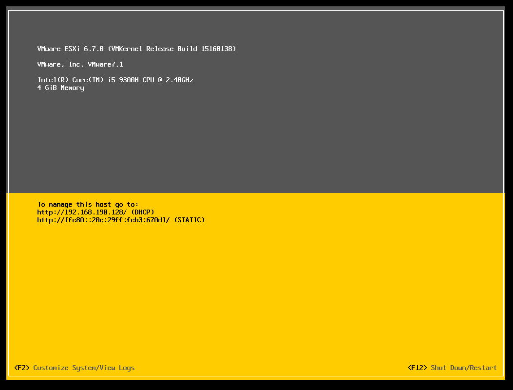

前段时间入手了入门软路由J1900，在学校跑20M校园网，物理机装OpenWRT性能太浪费了，于是就打算装个虚拟机跑一些东西。
之前在家装过PVE，所以我打算试一下ESXI，在入手的时候我就做过预习，J1900/N3150因为核显的问题不能直接装ESXI，开机会卡在Relocating modules and starting up the kernel
办法倒是有，大多数都是在另一台电脑装好再把硬盘插在J1900上。VMware官方其实有对此问题提出解决方法。
教程开始
添加启动参数
为了方便，以下部分截图使用虚拟机截图，操作和画面都和实体机一样
在开机的时候出现VMware标题时时按Shift+O添加启动参数
在末尾加个空格，然后输入以下语句
ignoreHeadless=TRUE
接着直接按回车，完成ESXI的安装，直到重启。
安装完重启之后同样要在开始的标题用同样的方法插入启动参数来进入系统。
使启动参数永久生效
如果每次开机都要手动添加启动参数的话会很麻烦，所以我们要让参数永久生效。
开启ESXI Shell
开机后进入的主标题界面
在主标题界面按F2并输入管理密码进入后台管理，进入后回车如图选择项
打开ESXI Shell，将第一项从这样
回车后变成这样就说明开了

然后按ESC键直到退出到进后台之前的标题画面
进入ESXI Shell
在主标题页面按Alt+F1进入ESXI Shell，输入用户名和密码登录
输入esxcfg-advcfg -k TRUE ignoreHeadless后回车
输入esxcfg-advcfg -j ignoreHeadless查看设置是否生效
返回TRUE说明成功了
之后按Alt+F2可以返回主界面
恭喜你，你的J1900安装ESXI就此完成了，以后随便重启都不怕了
附上实体机安装成功图片
好了，本教程就到此结束啦